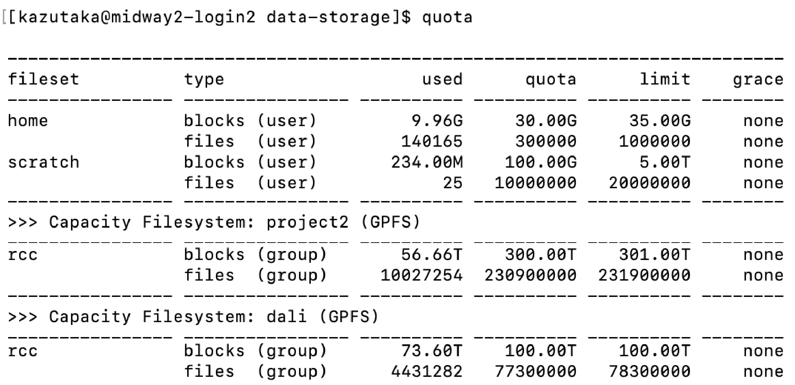

Data Storage on DaLI
The information here describes how users can access RCC resources. All users of RCC resources are responsible for knowing and abiding by the RCC User Policy.
RCC provides a high-performance GPFS shared file system on DaLI. All DaLI project directories are accessible on Midway2 via the directory /dali.
Quotas
The amount of data that can be stored on DaLI is controlled by quota. RCC enforces hard and soft limits on quotas. A soft quota can be exceeded for a short period of time called a grace period. The hard quota cannot be exceeded under any circumstances.
Additional storage is available through the Cluster Partnership Program, - Research I Allocation, Research II Allocation or, in certain circumstances, - Special Allocation.
Checking available space
To check your current quotas use the quota command. Typical output may look like this 
The output could have up to three sections. The top section displays information about the home directory and the scratch space (scratch2). The middle section displays information about the project2 space. The bottom section displays information about the DaLi space. Depending on how many groups you are part of, you may see multiple lines in the middle and the bottom sections.
Descriptions of the fields:
fileset: This is the file set or file system where this quota is valid.
type: This is the type of quota. This can be blocks for the amount of consumed disk space or files for the number of files in a directory. Either of blocks or files quotas can be set at the user or group level. The quota on the home directory and the scratch space is set as per user basis and the quota on the scratch space is set as per group basis.
used: This is the amount of disk space consumed or the number of files in the specified location.
quota: This is the soft quota (storage space or file count) associated with the specified location. It is possible for usage to exceed the soft quota for the grace period or up to the hard limit.
limit: This is the hard quota (storage space or file count) associated with the specified location. When your usage exceeds this limit, you will NOT be able to write to that filesystem.
grace: This is the grace period, or the amount of time remaining that the soft quota can be exceeded. The value none means that the quota is not exceeded. After a soft quota has been exceeded for longer than the grace period, it will no longer be possible to create new files.
Persistent Space
Persistent space is appropriate for long term storage. The location for persistent space on DaLI is the directory /dali. These directories have both file system :ref:snapshots and :ref:tape backup for data protection.
Home Directories
RCC users' home directories are accessible from DaLI and are generally used for storing frequently used items such as source code, binaries, and scripts. By default, a home directory is only accessible by its owner (mode 0700) and is suitable for storing files which do not need to be shared with others.
Project Directories
On DaLI, RCC PI Groups are allocated a Project Directory located at :file:/dali/<PI CNetID> where
The default permissions for files and directories created in a project directory allow group read/write with the group sticky bit set (mode 2770). The group ownership is set to the PI group.
Scratch Space
Shared Scratch Space
High performance shared scratch space can be accessed on DaLI using the SCRATCH environment variable. This scratch space is intended to be used for reading or writing data required by jobs running on the cluster. If a user is over quota, s/he can use scratch space as a temporary location to hold files (and/or compress them for archival purposes) but as scratch space is neither snapshotted nor backed up, it should always be viewed as temporary.
{>>Note: It is the responsibility of the user to ensure any important data in scratch space is moved to persistent storage. Scratch space is meant to be used for temporary, short-term storage only.\<<}
The default permissions for scratch space allow access only by its owner (mode 0700). The standard quota for the high performance scratch directory is 5 TB with a 100GB soft limit. The grace period that the soft limit may be exceeded is 30 days for shared scratch space.
Let's summarize the default file system permissions:
| Directory | Permissions |
|---|---|
$HOME |
0700 -- Accessible only to the owner |
$SCRATCH |
0700 -- Accessible only to the owner |
/dali/<PI CNetID> |
2770 -- Read/write for the project group |
/project2/<PI CNetID> |
2770 -- Read/write for the project group |
The default umask is 002. When new files or directories are created, the umask influences the default permissions of those files and directories. With the umask set to 002 all files and directories will be group readable and writable by default. In your home directory, the group ownership will be set to your personal group, which is the same as your CNetID, so you will still be the only user that can access your files and directories. In the project directories, the group sticky bit causes the group ownership to be the same as the directory. This means files created in a project directory will be readable and writable by the project group, which is typically what is wanted in those directories. Contact RCC help if you need assistance with setting filesystem permissions.
Data Recovery and Backups
Snapshots
Automated snapshots of project directories on DaLI are available in case of accidental file deletion or other problems. Currently snapshots are available for these time periods:
| Directory | Permissions | Snapshot path |
|---|---|---|
$HOME |
7 daily and 2 weekly | /snapshots/home/SNAPSHOT/home/CNetID |
dali/<any_folder> |
7 daily and 4 weekly | /gpfs3/cap/.snapshots/<any_folder> |
The snapshots for the dali directories are available from the DaLI login nodes. The {SNAPSHOT} refers to the time of the backup, e.g. daily-YYYY-MM-DD.05h30 or weekly-YYYY-MM-DD.05h30. To view the available snapshots, for example, from the DaLI login node use the command ls /gpfs3/cap/.snapshots
To restore a file from a snapshot, simply copy the file to where you want it with either cp or rsync.
Advanced Access Control via ACL
General Instructions
This section discusses a more flexible mechanism to administer data permissions. By default, only Linux-based permissions are set for folders and files, as described in File System Permissions. However, this only supports the permissions at the owner/group/others level. A second mechanism is called “Access Control Lists” (ACL), which provides precise control over any data (files or directories) customizable for individual users or groups. Before applying ACL to your data, please read and understand the following caveats.
-
By default no ACL is set for user data. ACL provides a highly flexible permission control, however, it also brings increased complexity to user access and management. PIs will normally want to share an entire project folder to all group members, and for this, the Linux-based permissions are enough. We suggest that users implement ACL controls only when necessary. One example is to protect confidential data in the project space by allowing only certain users to access confidential directories or files.
-
After ACL is set, both Linux-based and ACL permissions will work together as a dual-guard system. The final effective access to data is granted only if permitted by both mechanisms. For example, if a folder is group-accessible to a user by Linux-based permission but restricted by ACL, the user cannot access this folder.
-
Be sure you have enough knowledge setting up access via Linux-based permissions and ACL, i.e. you understand what “users”, “groups” and each attribute in “rwx” mean and how to use them. Otherwise, please ask help@rcc.uchicago.edu for assistance managing your data access. We are here and happy to help you set up the permissions to keep your data safe and accessible as required.
Example
Suppose there is a folder tree as below, and you want to allow the folder my_folder to be accessible by the user jim only, and jim is already a member of your group rcctemp1:
/dali/rcctemp1 |- my_folder |- other_stuff
Before using ACL, you need to confirm that this folder is permitted by all members in the group rcctemp1:
$ cd /dali $ chgrp -R rcctemp1 my_folder $ chmod -R 770 rcctemp1 $ cd rcctemp1
At this moment, the folder rcctemp1 becomes readable and writable by all members of group rcctemp1. Then, you can use the setfacl command to control the individual users access precisely. First, you need to remove the default group access by ACL::
$ setfacl -m g::--- my_folder
Although the command ls -l will still display group rwx access for the my_folder folder in the Linux-based permissions, users cannot access it anymore due to the permission set by ACL. Then, you can grant the user jim access to the folder::
$ setfacl -m u:jim:rwx my_folder
At this step, the user jim has both read and write permissions to the folder my_folder. You can set up permissions for each user the way you want.
Tip
The format of the command is setfacl -m [level]:[id]:[permissions] [folder_or_file_name], where the level bit is either u or g as for an individual user or a group, the id is the username or group name to be set, and the permissions are the three bits r, w, x or - (means off) with the same meanings as Linux-based attributes.
To view the list of configured accesses on the folder my_folder, run::
$ getfacl my_folder # file: my_folder # owner: root # group: rcctemp1 user::rwx user:jim:rwx group::--- mask::rwx other::---
To revoke the permissions of the user jim to the folder::
$ setfacl -x u:jim my_folder
To clean up (remove) all ACL controls to the folder::
$ setfacl -b my_folder
To change the ACL configuraitons recursively in all subfolders, you can add -R option to the commands above.
For more information, please visit the ACL manual.